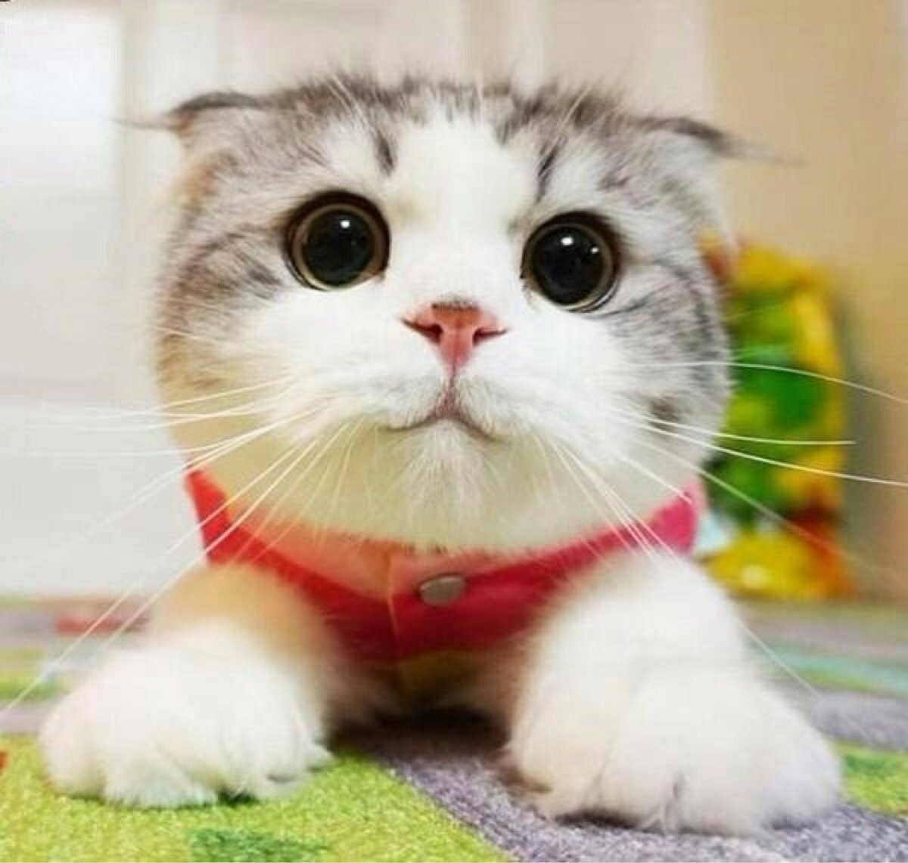
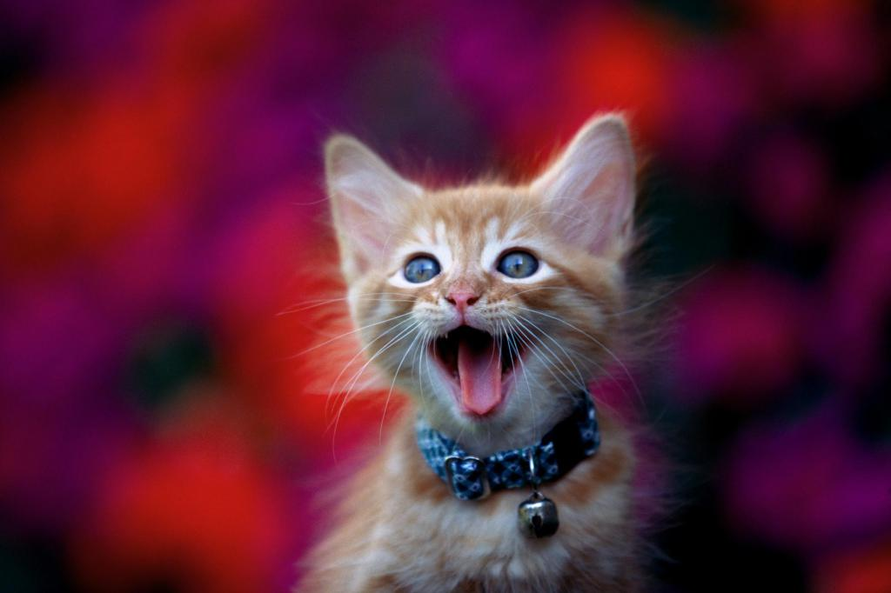
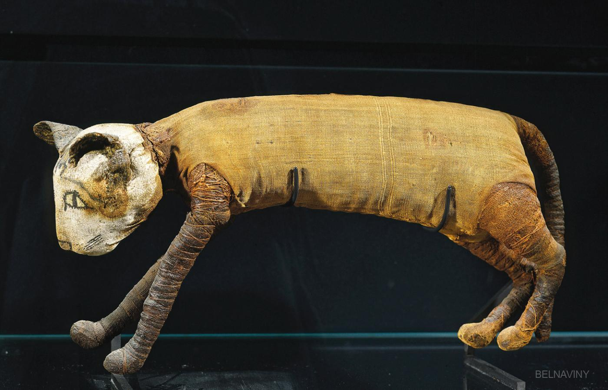

Кто мы?
Мы пушистые (или лысые) милашки. Любим, когда нас гладят и кормят. Здесь мы расскажем о том, как выглядит мир нашими глазами.
Что вы узнаете:
Кошки различают свои имена!
Кошки различают свои имена!
Домашние кошки способны выделять собственные имена в речи хозяев. Более того, они умеют отличать свои клички от имен других котов, которые живут вместе с ними. Это экспериментально доказали японские ученые.
Они в присутствии 16 кошек произносили подряд несколько существительных, среди которых были имена этих животных (они назывались не в самом начале), и наблюдали за их поведением. С каждым новым словом реакция зверей снижалась, но после того, как они слышали свою кличку, вновь повышалась.
Затем ученые повторили эксперимент: 34-м домашним кошкам, которые жили вместе с другими сородичами, подряд называли слова и их имена. Оказалось, что животные, даже те, что обитают под одной крышей с четырьмя-пятью другими кошками, также хорошо узнают свое имя, как единственные питомцы в семье. Впрочем, авторы работы считают, что коты запомнили свои клички не просто так. Скорее всего, они ассоциируют их с наградой или наказанием.
Кто сказал мяу
Согласно работе американских зоологов, большинство кошек, выбирая между едой и общением с людьми, предпочитают человека. Причем речь идет как о домашних питомцах, так и о животных из приютов.
На первом этапе эксперимента ученые лишали взрослых кошек четырех важных вещей. Их не кормили, не давали им игрушек, не пускали к людям и ограничивали проникновение в помещение приятных для кошек запахов. Через несколько часов перед ними ставили миску с кормом, давали игрушки и открывали дверь в две комнаты: в одной находились люди, в другой вкусно пахло — конечно, с точки зрения кошки. И больше половины животных, лишенных еды в течение нескольких часов, выбирали общение с человеком! Так поступали даже коты из приютов, которые нечасто видят людей.
Исследователи считают, что кошки нуждаются в общении с человеком независимо от того, насколько близко и регулярно взаимодействовали с ним раньше. И именно для этого они выработали мяуканье.
Южнокорейские ученые, изучавшие одичавших кошек Национального парка Чирисан, выяснили, что котята мяукают только в детстве, а на человека обычно шипят. В то время как обычные домашние коты используют для переговоров с человеком высокое жалобное мяу. Его тональность у домашних кошек Felis silvestris catus значительно отличается от звуков, которые произносят котята степных Felis silvestris lybica — это ближайшие дикие родственники домашних питомцев.

Мумификация
Древнеегипетские кошки напоминали современных представительниц абиссинской породы. Они были среднего размера, худощавыми, рыжеватого окраса. Сегодня мы знаем об этом благодаря кошачьим мумиям, которых нашли археологи.
Смерть кошки была настоящей трагедией для любой египетской семьи. Траур по умершему животному длился около 70 дней, а члены семьи в это время брили головы и брови в знак утраты.
Умерших животных оборачивали льняной тканью, умащивали благовонными маслами и бальзамировали. Чтобы домашние любимицы «хорошо себя чувствовали» в загробном мире, к ним в могилу клали игрушки, с которыми те любили играть при жизни.
Мумия помещалась в известняковый или деревянный саркофаг, иногда украшенный золотом, если животное обитало в доме богача.
